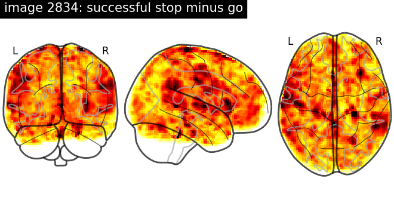
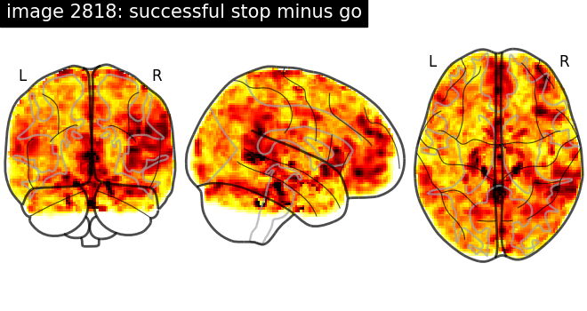
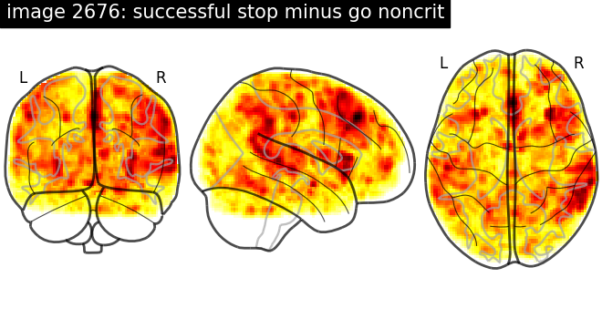
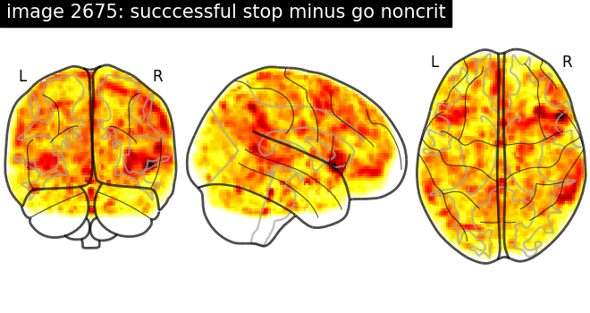
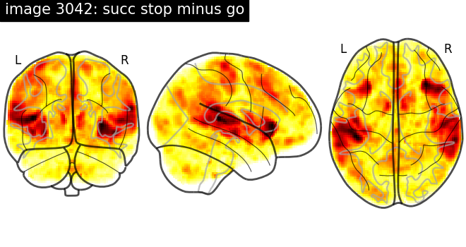
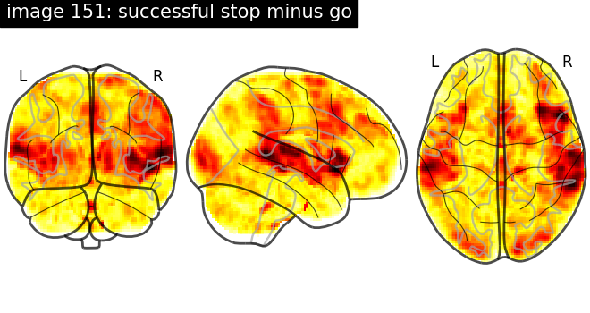
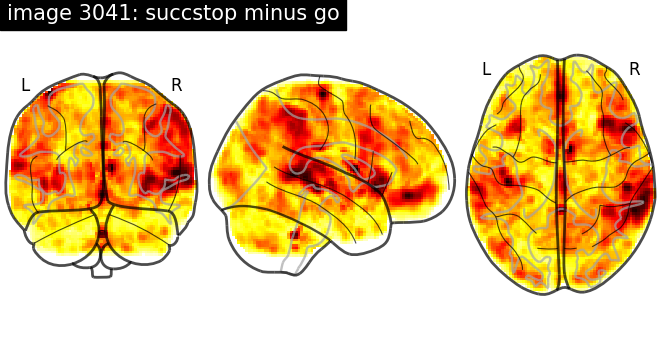

Note
Click here to download the full example code or to run this example in your browser via Binder
9.8.5. NeuroVault meta-analysis of stop-go paradigm studies.¶
This example shows how to download statistical maps from NeuroVault
See nilearn.datasets.fetch_neurovault_ids
documentation for more details.
# Author: Ben Cipollini
# License: BSD
import scipy
from nilearn.datasets import fetch_neurovault_ids
from nilearn import plotting
from nilearn.image import new_img_like, load_img, math_img, get_data
9.8.5.1. Fetch images for “successful stop minus go”-like protocols.¶
# These are the images we are interested in,
# in order to save time we specify their ids explicitly.
stop_go_image_ids = (151, 3041, 3042, 2676, 2675, 2818, 2834)
# These ids were determined by querying neurovault like this:
# from nilearn.datasets import fetch_neurovault, neurovault
# nv_data = fetch_neurovault(
# max_images=7,
# cognitive_paradigm_cogatlas=neurovault.Contains('stop signal'),
# contrast_definition=neurovault.Contains('succ', 'stop', 'go'),
# map_type='T map')
# print([meta['id'] for meta in nv_data['images_meta']])
nv_data = fetch_neurovault_ids(image_ids=stop_go_image_ids)
images_meta = nv_data['images_meta']
collections = nv_data['collections_meta']
Out:
Reading local neurovault data.
Already fetched 1 image
Already fetched 2 images
Already fetched 3 images
Already fetched 4 images
Already fetched 5 images
Already fetched 6 images
Already fetched 7 images
7 images found on local disk.
9.8.5.2. Visualize the data¶
print('\nplotting glass brain for collected images\n')
for im in images_meta:
plotting.plot_glass_brain(
im['absolute_path'],
title='image {0}: {1}'.format(im['id'], im['contrast_definition']))
- 
- 
- 
- 
- 
- 
- 
Out:
plotting glass brain for collected images
9.8.5.3. Compute statistics¶
def t_to_z(t_scores, deg_of_freedom):
p_values = scipy.stats.t.sf(t_scores, df=deg_of_freedom)
z_values = scipy.stats.norm.isf(p_values)
return z_values
# Compute z values
mean_maps = []
z_imgs = []
current_collection = None
print("\nComputing maps...")
# convert t to z for all images
for this_meta in images_meta:
if this_meta['collection_id'] != current_collection:
print("\n\nCollection {0}:".format(this_meta['id']))
current_collection = this_meta['collection_id']
# Load and validate the downloaded image.
t_img = load_img(this_meta['absolute_path'])
deg_of_freedom = this_meta['number_of_subjects'] - 2
print(" Image {1}: degrees of freedom: {2}".format(
"", this_meta['id'], deg_of_freedom))
# Convert data, create new image.
z_img = new_img_like(
t_img, t_to_z(get_data(t_img), deg_of_freedom=deg_of_freedom))
z_imgs.append(z_img)
Out:
Computing maps...
Collection 3042:
Image 3042: degrees of freedom: 22
Collection 2818:
Image 2818: degrees of freedom: 18
Image 2834: degrees of freedom: 18
Collection 2675:
Image 2675: degrees of freedom: 6
Image 2676: degrees of freedom: 6
Collection 151:
Image 151: degrees of freedom: 13
Image 3041: degrees of freedom: 13
9.8.5.4. Plot the combined z maps¶
cut_coords = [-15, -8, 6, 30, 46, 62]
meta_analysis_img = math_img(
'np.sum(z_imgs, axis=3) / np.sqrt(z_imgs.shape[3])',
z_imgs=z_imgs)
plotting.plot_stat_map(meta_analysis_img, display_mode='z', threshold=6,
cut_coords=cut_coords, vmax=12)
plotting.show()
Total running time of the script: ( 0 minutes 18.696 seconds)
Estimated memory usage: 41 MB